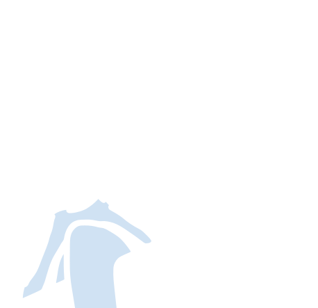
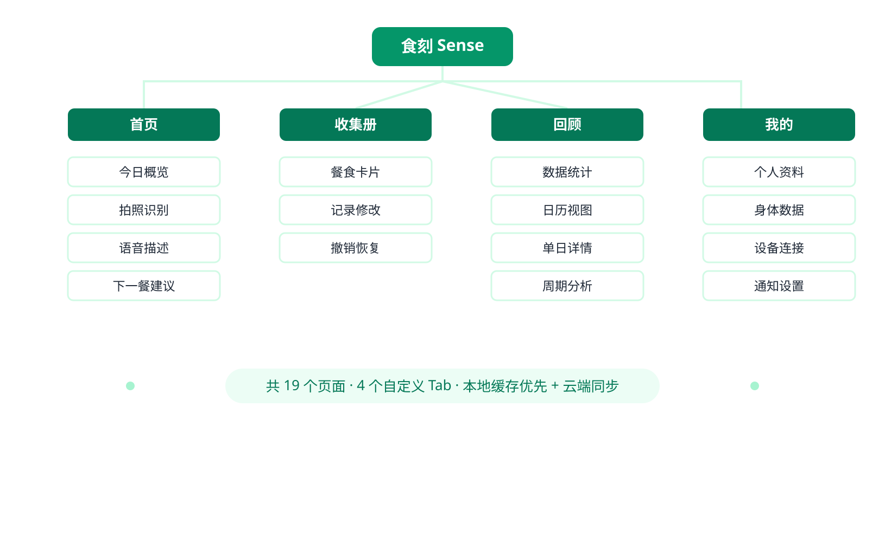
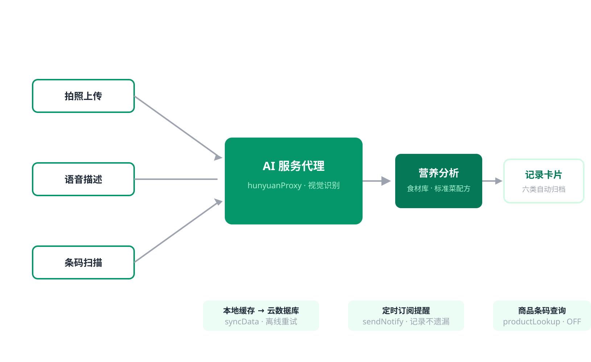
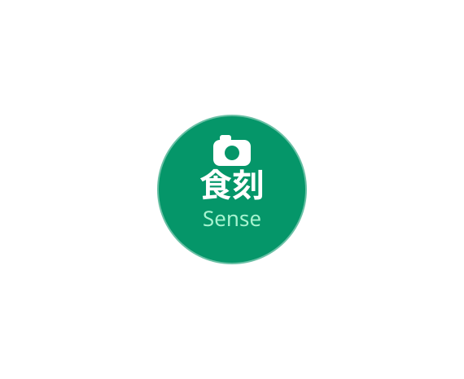
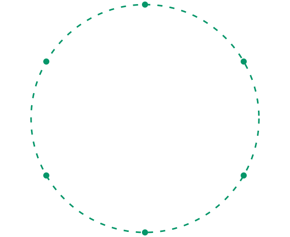
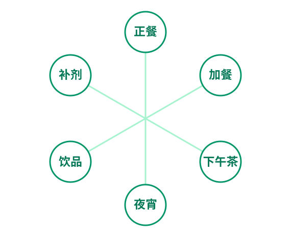
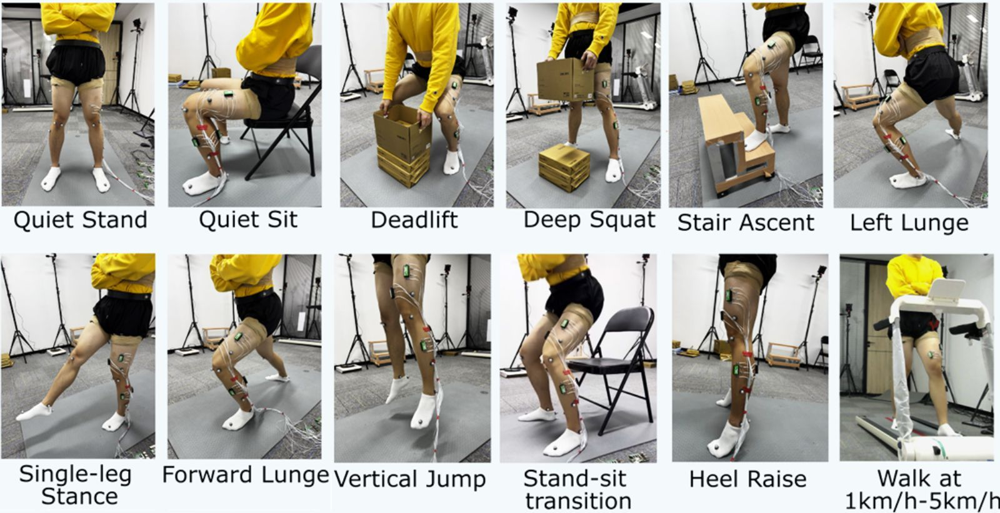
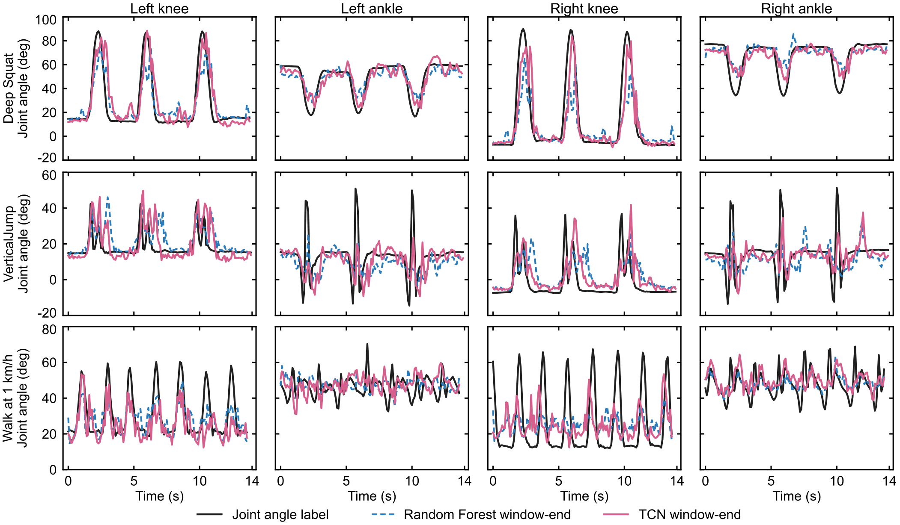

-
WHO
I AM任桌依-Ren Zhuoyi
工业设计与人机交互复合背景，
从用户需求出发，以系统思维解决实际问题。


-
PRODUCT THINKING / AI PRACTICE
理解业务，也理解用户，
让 AI 能力真正进入产品流程。-
01
识别关键问题
从业务目标与用户场景出发，把模糊需求转化为清晰、可验证的问题。
-
02
组织产品方案
平衡业务价值、实现成本与使用体验，建立可推进的产品路径。
-
03
推动落地迭代
协同设计、研发与业务团队，在验证和反馈中持续完善方案。
-
01
-
- 业务理解
-
- 产品规划
-
- AI 应用
-
- 体验验证
GROWTH JOURNEY
成长经历
01从造物，到理解人设计训练让我关注的不只是产品形态，更是人的行为、需求与使用情境。
02从体验，到理解业务真实业务让我学会在复杂规则、协作关系与用户体验之间寻找可落地的平衡。
03从功能，到智能协作面对新的技术能力，我开始思考如何让 AI 参与工作流程，并转化为稳定、可感知的产品价值。
-
-
AI 项目管理助手 · ProjectSync AI
把散落的工作记录，
变成可确认的工作总结。自动读取授权文档、会议纪要与日历，识别个人实际进展，生成日报周报草稿；你确认之后，才安全写回原文档。
证据可追溯业务 / 项目双主线写回默认关闭消息日历云文档PProjectSync AI工作总结与项目跟踪助手私聊PERSONAL WORK AGENT · 仅管理你的工作
本周工作总结
2026.10.26—10.30 · 周五 · 已依据历史记录增量整理
今日日报待确认今日完成事项、问题与后续安排
4 项工作 · 1 项需留意查看与修改 →本周周报待确认本周进展、关键成果及下周计划
4 项工作 · 1 项需留意查看与修改 →原始资料保持不变，确认后才会更新在线文档
直接说：把第 2 项改成…… / 补充…… / 查看某项目进展▶- 01收集工作事实
从在线文档、会议纪要、日历与补充记录中整理事实，并保留来源。
- 02识别个人贡献
区分已完成、推进中与待核验，不确定的内容明确标记为待核验。
- 03生成可编辑草稿
按你的习惯生成日报与周报结构，支持用自然语言直接修改。
- 04确认后安全写回
目标映射、快照比对与冲突检查通过后，才更新原文档对应段落。
从一条消息，
到一次安全的写回。1飞书机器人接收消息 · 读取授权文档HTTPS2ProjectSync APIFastAPI · SQLite 存储事实、草稿与审计调用Dify Chatflow事实抽取 · 归类 · 总结飞书 OpenAPI消息 · 云文档 · 可选日历Agent Skill在 Codex / Claude Code 等宿主 Agent 中，用已授权的文档工具读写，共用同一套事实与安全规则。安全默认，边界清晰- 01写回默认关闭
WRITEBACK_ENABLED=false，先在测试文档验证读取与映射，再考虑开启。
- 02按租户与用户隔离
工作事实、来源、草稿与目标文档映射分别隔离，互不可见。
- 03每条结论都有来源
识别个人贡献时保留证据链，存疑内容进入待核验状态。
- 04只改该改的段落
显式映射 + 快照比对 + 冲突检查，不覆盖他人内容。
- 01
-
食刻感知小程序
用一张照片，
读懂你的每一餐。基于 AI 图像识别的饮食记录与营养分析工具，让健康饮食更简单、更可持续。
拍照识别 营养分析 饮食记录10:24拍照餐食10:24晚上好，狂吃我猛吃
记录当下，也看见自己的饮食节奏。
今天概览持续记录中0条记录
今天还没有记录，拍下一餐就开始。
不知道吃啥，就选这个换一个蔬菜豆腐汤配小份主食
减脂清淡
豆腐鲜嫩，营养清淡，优选补充蛋白质
最近记录还没有记录，去拍一张吧›+10:24收藏册批量管理查看、补充和管理你的收藏
0总记录0本周新增0待补充食材记录成就集规律饮食者连续记录 3 天›本周活跃本周记录 5 次›食刻收藏家累计记录 20 条›连续打卡 7 天本月第 2 次达成›+使用流程 拍照餐食›AI 识别›营养分析›生成记录›长期追踪扫码体验微信扫一扫，打开食刻 Sense01 拍照识别拍下餐食，AI 自动识别菜品与份量，即时生成记录卡片
02 营养分析内置食材库与标准菜配方，估算热量、蛋白质、碳水等关键营养
03 食物数据库覆盖 41 种常见食材营养数据，按每 100g 可食部分换算
04 持续记录云端同步、订阅提醒、周期回顾，帮助形成长期饮食节奏
产品全景
功能架构


- 拍照即记录，AI 完成从识别到分析的全流程
- 食刻 Sense，微信小程序饮食记录工具
拍照、分析、提醒三重能力
构成完整记录闭环- 从拍照识别、语音输入，到条码查询。1
-
首页拍照后识别任务即时展示进度，
支持普通录音与文字输入两种描述方式，
包装商品可通过条码查询 Open Food Facts 数据，
让每一餐的记录更省力。
- 从营养估算、历史回顾，到订阅提醒。2
-
内置 41 种基础食材与 12 道标准菜配方，离线也能完成估算，
日历、回顾与周期分析帮用户看见长期饮食节奏，
订阅消息按时提醒，记录不遗漏。
- 19 个页面 · 4 个云函数，支持离线缓存与云端同步
一次拍照，全面记录
饮食节奏由此看得见





食刻 Sense- 饮食记录小程序
-
连接拍照识别、营养分析、历史回顾与订阅提醒，
以微信小程序为载体，兼顾轻量使用与数据沉淀。
本地缓存优先、云端同步兜底的存储策略，
让记录在离线场景下也不丢失。
-
- 离线基础食材营养数据
- 41
(每 100g 可食部分，来源：食刻内置食材库 v1)
-
- 标准中国菜配方
- 12
(用于外食场景热量估算，来源：食刻标准菜配方 v1)
-
- 小程序页面/云函数
- 19/4
(覆盖记录、回顾、提醒与个人设置全流程)
-
- 记录类型自动归档
- 6
(正餐、加餐、下午茶、夜宵、饮品、补剂)
-
01 / 04
PAPERVERSE
儿童互动剪纸叙事产品
此项目利用元宇宙的未来性与学龄期儿童的创造性为传统剪纸注入新活力，让儿童在体验和创造中学习传统剪纸技艺，同时体会其更深的文化意义和艺术的魅力。
- 类型服务设计 / 产品设计 / 交互设计
02 / 04CARBON NAVICART
低碳数字化购物服务设计
“Carbon Navicart” 是一个基于无介质全息显示技术的智能购物解决方案。它包括一款智能购物车和可穿戴的购物手环，以及配套的客户端 APP。购物车能够实时显示商品的碳足迹，推荐低碳替代品，帮助消费者在购物时做出环保的决策。
- 类型服务设计 / 购物体验 / 低碳设计
03 / 04RADLEVEL CARE
核素分级诊疗系统
在福岛核污水排放导致的核素积累背景下，设计一个核素分级诊疗系统，以减少恐慌造成的医疗挤兑。通过 APP 与核素检测马桶帮助市民居家检测、缓解焦虑，并提供分级医疗指导；帮助医疗机构高效且有针对性开展治疗研究，同时协调多方数据，帮助政府掌握市民健康状况。
- 类型服务设计 / 产品设计
04 / 04NEMED
城乡校园废纸回收与利用服务设计
本项目是为城市和农村学校的废纸回收和再利用而设计的系统，废纸处理系统通过设计废纸转换器、替换垃圾桶和应用程序来实现。
- 类型服务设计 / 环境保护 / 废纸回收
-
- Synchronized AMG and EMG Dataset of Lower-limb Muscle Activities in Everyday Training
- SAME-LIMB · OPEN RESEARCH DATASET
面向日常下肢训练场景，同步采集加速度肌动图（AMG）、表面肌电（sEMG）与光学动作捕捉数据，为肌肉活动分析和膝踝关节角估计提供可复现基准。

-
30
- 健康参与者
- 15 位女性 · 15 位男性
同步记录日常下肢训练中的肌肉活动与运动学数据
PARTICIPANTS -
1,918
- 公开试验
- AMG、表面 EMG 与光学动捕同步采集
构成可复现的跨受试者研究基础
RELEASED TRIALS -
16
- 任务条件
- 11 项功能动作 · 5 种步行速度 输出双侧膝关节与踝关节 4 组角度参考
TASK CONDITIONS
多模态同步采集
SAME—LIMB-
- AMG
- 1,600 Hz
-
- EMG
- 1,000 Hz
-
- MoCap
- 90 Hz
-
- AMG
- 16 传感器
-
- EMG
- 4 通道
-
- 动捕
- 16 摄像机
-
- 标记点
- 15 个
-
- 肌肉位点
- 4 处
-
- 关节输出
- 4 组
-
- 参与者
- 30 人
-
- 公开试验
- 1,918 次
-
- 任务条件
- 16 种
-
- 深蹲
- Deep squat
-
- 垂直跳
- Vertical jump
-
- 步行
- 1–5 km/h
-
- 膝关节
- 双侧参考
-
- 踝关节
- 双侧参考
-
- RF
- 基准模型
-
- TCN
- 基准模型
-
- 开放数据
- 可复现
多模态肌肉活动数据
与关节角预测基准
- 代表性关节角预测 · 深蹲 / 垂直跳 / 步行
- MoCap 标签 · Random Forest · TCN

JOINT ANGLE · RANDOM FOREST · TCN -
新闻媒体
- 广告影片
- 项目影片
Ren Zhuoyi'Portfolio